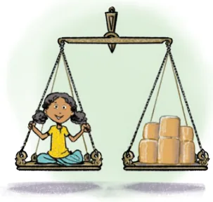
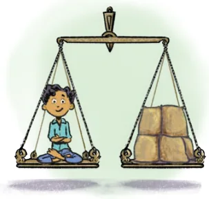

Last year, we looked at interesting thought experiments in the chapter on Large Numbers. Let us continue this journey. Nanjundappa wants to donate jaggery equal to Roxie’s weight and wheat equal to Estu’s weight. He is wondering how much it would cost.


What would be the worth (in rupees) of the donated jaggery? What would be the worth (in rupees) of the donated wheat? In order to find out, let us first describe the relationships among the quantities present. Worth of jaggery (in rupees) = Roxie’s weight in kg \(\times\) cost of 1 kg jaggery. Worth of wheat (in rupees) = Estu’s weight in kg \(\times\) cost of 1 kg wheat. Make necessary and reasonable assumptions for the unknowns and find the answers. Remember, Roxie is 13 years old and Estu is 11 years old. Assuming Roxie’s weight to be 45 kg and the cost of 1 kg of jaggery to be ₹70, the worth of donated jaggery is \(45 \times 70 =\) ₹3150. Assuming Estu’s weight to be 50 kg and the cost of 1 kg of wheat to be ₹50, the worth of donated wheat is \(50 \times 50 =\) ₹2500.
The practice of offering goods equal to the weight of a person, called Tulābhāra or Tulābhāram, is quite old and is still followed in many places in Southern India. It is a symbol of bhakti (surrendering oneself), a token of gratitude; it also supports the community.
Roxie wonders, "Instead of jaggery if we use 1-rupee coins, how many coins are needed to equal my weight?". How can we find out? For questions like these, you can consider following the steps suggested below.
- Guessing: Make an instinctive (quick) guess of what the answer could be, without any calculations.

- Calculating using estimation and approximation -
- Describe the relationships among the quantities that are needed to find the answer.
- Make reasonable assumptions and approximations if the required information is not available.
- Compute and find the answer (and check how close your guess was).
Would the number of coins be in hundreds, thousands, lakhs, crores, or even more? Make an instinctive guess.
Find the answer by making necessary and reasonable assumptions and approximations for How about measuring the unknowns. Remember, we are not looking for to find out the weight
an exact answer but a reasonably close estimate.
Initially, your guesses may be very far off from the answer and it is perfectly fine! You will get better at it like as you do it often and in different situations. Guessing and estimating can build intuition about numbers and various quantities.
Estu asks, "What if we use 5-rupee coins or 10-rupee notes instead? How much money could it be?" Make an instinctive guess first. Then find out (make necessary and reasonable assumptions about the unknown details and find the answers). Estu says, "When I become an adult, I would like to donate notebooks worth my weight every year". Roxie says, "When I grow up, I would like to do annadāna (offering grains or meals) worth my weight every year". How many people might benefit from each of these offerings in a year? Again, guess first before finding out. Roxie and Estu overheard someone saying - "We did pādayātra for about 400 km to reach this place! We arrived early this morning." How long ago would they have started their journey?
Find answers by making necessary assumptions and approximations. Do guess first before calculating to check how close your guess was!
Note to the Teacher: Assumptions can vary greatly at times, and as a result the answers computed using these you can also vary. This is perfectly alright. Modelling the situation properly is crucial, which can also be done in different ways sometimes. The accuracy of the assumed numbers or quantities can get better with exposure and practice.

Pādayātra, is the traditional practice of walking long distances as part of a religious or spiritual pursuit. People across religions in our country observe similar forms of pilgrimage or spiritual walking, although they may have different names or purposes.
Some of the pilgrimages are Ajmer Sharif Dargah Ziyarat, Pandharpur Wari, Kānwar Yatra, Sabarimala Yatra, Sammed Shikharji Yatra, Lumbini to Sarnath Yatra.
Before the rise of modern transport, people moved from one place to another by walking - sometimes merchants, sages, and scholars walked thousands of kilometres to different parts of the world across deserts, mountains, and rivers.
How many times can a person circumnavigate (go around the world) the Earth in their lifetime if they walk non-stop? Consider the distance around the Earth as 40,000 km.